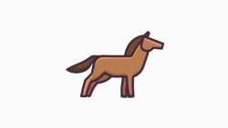
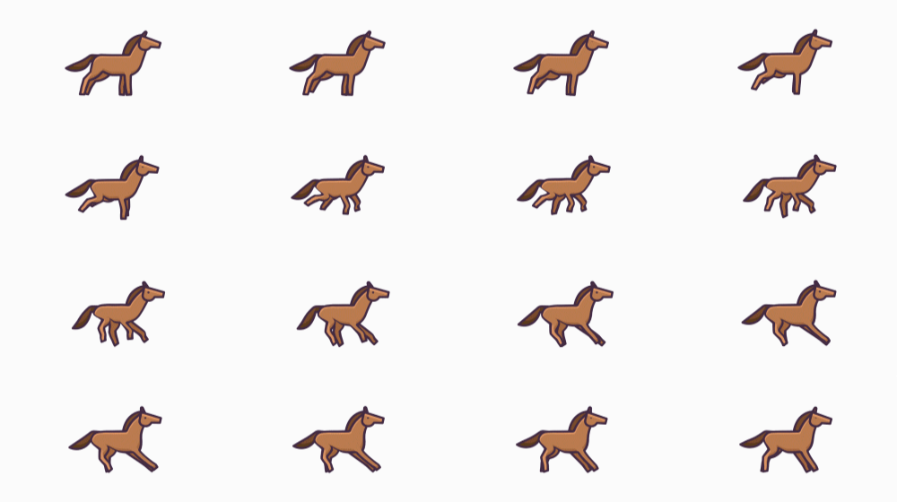

若圖片來源是 GIF，執行 p5.js 的 image 函式，就看繪圖時正好播放到哪個影格，例如，若有以下的圖片（來源 GIPHY）：

效果當然並不理想，例如：
如果 frameRate 更新率設低，影格就容易不連續，p5.Image 提供了 pause、play 等方法，可以暫停、播放 GIF，不過要留意 GIF 的每一個影格品質，確認沒有破圖之類的問題。
另一個方式是將每個影格圖片存為獨立的圖片檔案，然後依序播放，例如另存出 16 張圖檔：
只不過這要發出多次的請求來下載圖檔，檔案管理上也不方便，若不想這麼做，可以將這 16 張圖檔合併為一張大圖：

然後藉由控制圖片來源的範圍，每次僅繪製出其中一格：